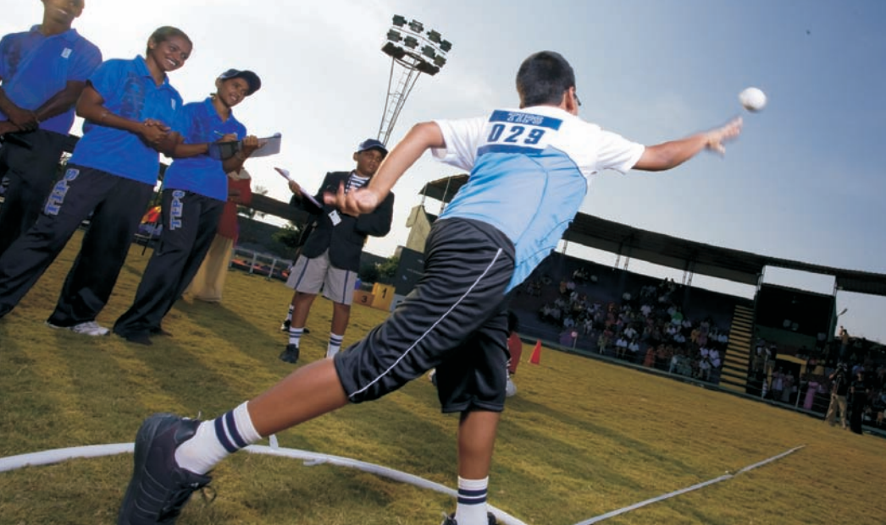

The Indian Public School strives hard and smart to transform youngsters into proactive and compassionate human beings. We look beyond academic emphasis and groom our students into well-rounded, good human beings because we care about them.

STEM
STEM education begins in early childhood when children are curious and creative, and continues through college. All children, regardless of gender or learning style can excel in STEM disciplines and aspire to STEM careers. Effective teaching at all levels utilizes hands-on, minds-on inquiry into the natural world.

CURRICULUM
In today’s increasingly complex world, the importance of Internationalism in education keeps growing too. Education today is the synonym of globalization. TIPS provides a robust, vibrant and holistic school education that will engender excellence in every sphere of human endeavor.

SPORTS
We pride ourselves on a high level of student involvement in sports and believe that participation in purposeful, competitive interscholastic athletics will help our students lead full and valuable adult lives. Our competitive edge is balanced by a commitment to a ‘student first, winning second’ principle, and our enthusiastic and experienced coaches encourage everybody to take part.

P.Iniyan won 1st place in "District Rapid Selection Chess Tournament - 2013", which was held at Kongu nadu makkal sevai sangam, Erode on 25th January 2013.

We Congratulate Vendhan of VIII-F who won the Ist place in Essay Writing in the Talent Expo 2012 TNPL held on 13/10/2012 at Pugalur.